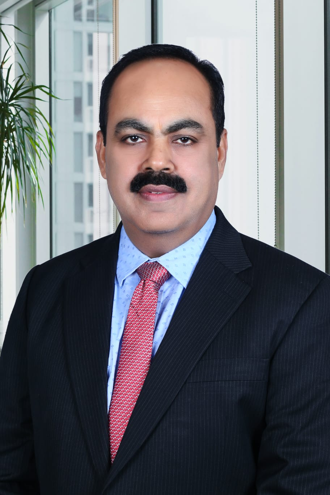

Experience That Creates Impact.
Helping logistics, supply chain and distribution businesses strengthen commercial discipline, operational control, profitable growth and leadership.

Rajesh Mirgh brings three decades of frontline Indian logistics experience across sales, P&L, operations, franchise networks, key accounts and commercial risk. His career includes Blue Dart, Gati, V-Trans, CCI Logistics, Tech Route Logistics, Scorpion Express and Jai Orient SCM.
His experience includes accountability for turnovers reaching ₹360 Cr, approximately 10% profitability against budget, and building and leading teams of 150+ professionals across PAN India territories.
His advisory perspective focuses on practical signals behind business performance: branch profitability, DSO movement, credit exposure, franchise governance, lane economics, capacity utilisation and the discipline required to grow without sacrificing margin.
IICA ID Certified — IDDB-NR-202610-102515. Open to board and advisory conversations with founders and leadership teams building serious logistics and supply-chain businesses.
Focused on the operating realities that determine whether growth creates value or creates hidden risk.
Business health checks, profitability structures, branch economics, management review and 90-day improvement roadmaps.
PTL/FTL, express, network expansion, market penetration, key accounts, pricing and commercial strategy aligned with operational capacity.
Sales organisation design, lane-wise strategy, credit-retail mix, account segmentation, performance management and growth discipline.
Early-warning review of DSO, outstanding, branch losses, franchise exposure, service commitments and margin leakage.
Geographic opportunity assessment, franchise clusters, network economics and governance structures that support scalable expansion.
Practical mentoring for logistics professionals and emerging leaders, informed by long-term frontline experience.
For logistics, supply-chain, e-commerce and distribution businesses, operational signals can become governance signals before they appear in headline financial results.
Understanding whether revenue growth is translating into sustainable profitability.
Credit exposure, customer concentration, DSO and portfolio discipline as early warning indicators.
Franchise, branch and expansion decisions assessed through economics, accountability and execution risk.
Organisational structure, profitability, branch ROI culture, DSO/fund-flow discipline and team development.
Established P&L accountability, sales and operations model, and governance discipline for an emerging logistics venture.
Built and led a 60+ member PAN India sales team, developed branches and franchise clusters, and maintained DSO discipline.
Led all-India sales, commercial team structure, key-account strategy and market penetration with P&L awareness.
Drove PAN India Express/PTL expansion, lane-wise capacity utilisation, portfolio discipline and multi-region sales performance.
Future articles and conversations can focus on logistics profitability, commercial governance, operational risk, leadership and sustainable growth.
For advisory, consulting, mentoring or board-level conversations, connect directly.